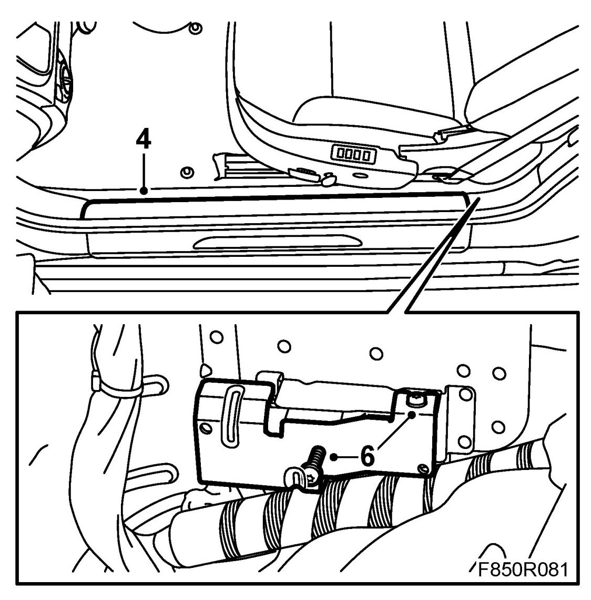
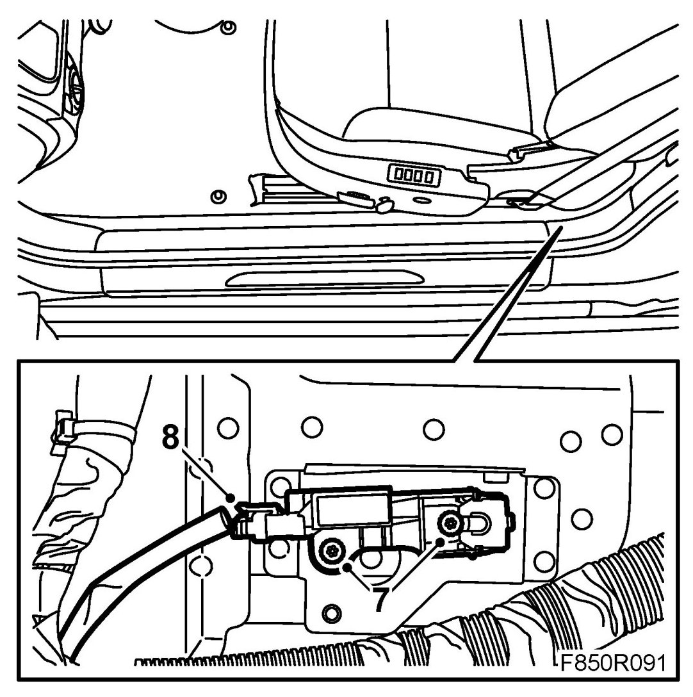
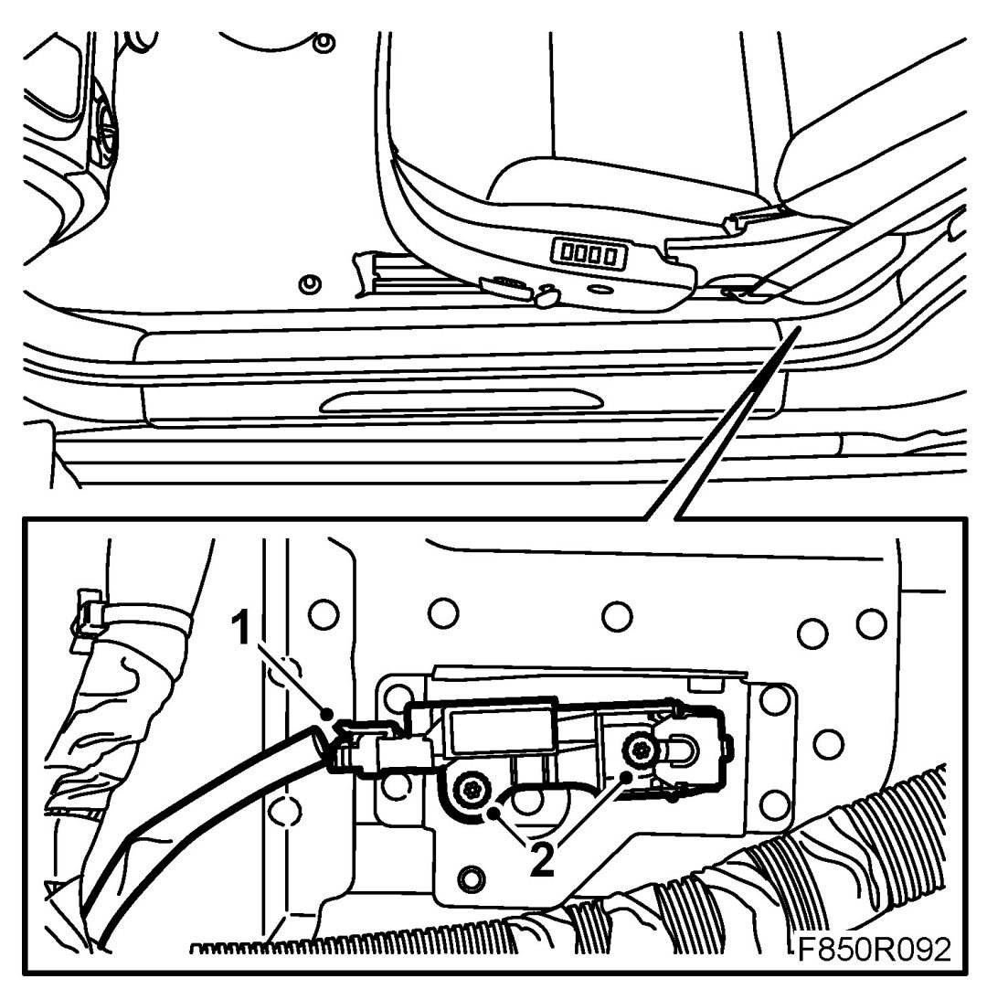
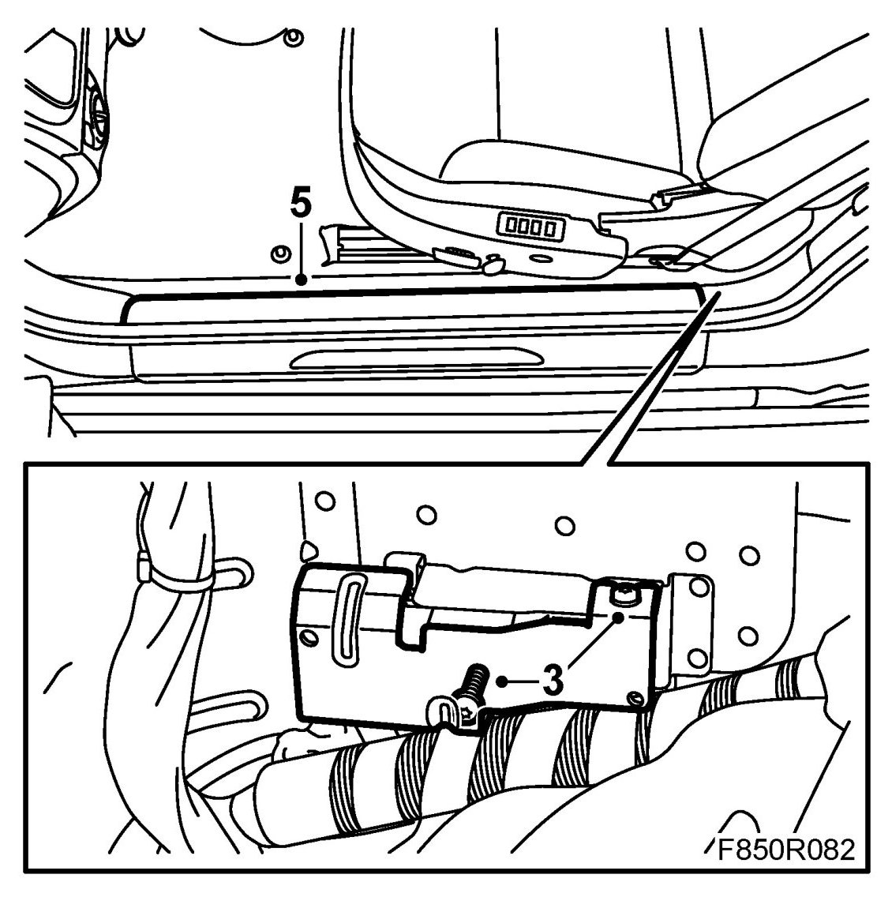

Impact Sensor, Side (328D, 328P), CV
Impact Sensor, Side (328D, 328P), CV
WARNING: Read through Safety and handling instructions and Before removing a control module before starting work.
To remove
WARNING: The battery's ground cable must be removed before the positive cable. Wait for at least 1 minute after disconnecting the battery before beginning any work on the airbag system. Otherwise the airbag may be deployed unintentionally and this can cause fatal/severe personal injuries.
1. Remove the rear seat cushion.
2. Turn the ignition key to the LOCK position.
3. Set the seat to its front position.
4. Remove the inner sill trim.

5. Fold under the carpet.
6. Remove the protective plate.
7. Release the screws a few turns, press the locking clip together on the rear of the side impact sensor. Press the front of the side impact sensor back and lift out the sensor.

8. Remove the connector from the side impact sensor.
To fit
1. Attach the connector to the side impact sensor.

2. Position the sensor and pull the front part forwards. Tighten the screws.
Tightening torque 6 Nm (4.5 lbf ft)
3. Refit the protective plate.

4. Refit the carpet.
5. Refit the inner sill trim.
6. Fit rear seat cushion.
7. Connect the battery.
8. Turn ON the ignition and check the airbag system and control module using the diagnostic tool as follows:
Connect the diagnostics tool, delete any diagnostic trouble codes.
Switch off the ignition and then on again. Wait at least 1 minute with the ignition switched on.
Check whether a diagnostic trouble code is shown.
If no diagnostic trouble code is displayed:
Carry out fault diagnosis according to the instructions under respective trouble codes.
If no diagnostic trouble code is displayed:
Fitting completed correctly. Disconnect the diagnostics instrument.
9. Carry out Measures after disconnecting the battery.